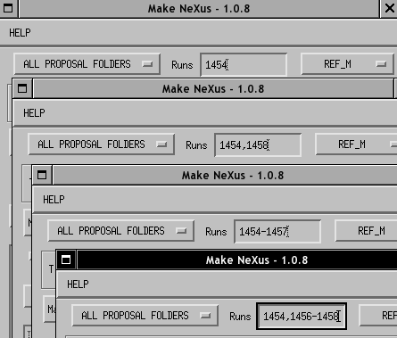
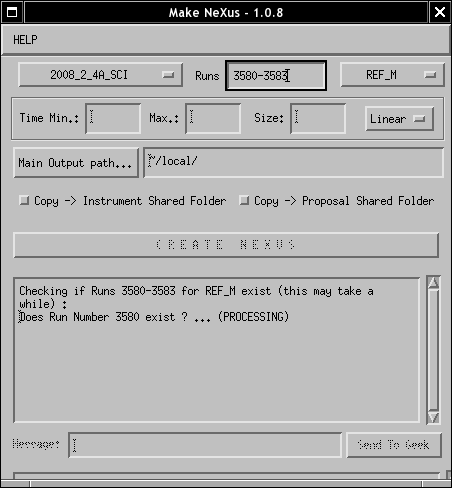
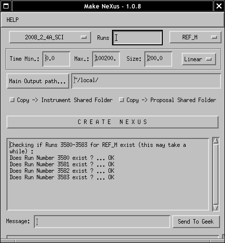

Load one or a set of runs
You can either load 1 run at a time or enter a set of runs using the following
nomenclature:
- 1454 -> run 1454
- 1454,1458 -> run 1454 and run 1458
- 1454-1457 -> run 1454, run 1455, run 1456 and run 1457
- 1454,1456-1458 -> run 1454, run 1456, run 1457 and run 1458
You can speed up the search process by selecting the proposal folder from
where this run belongs.

Examples of Inputs
Press ENTER or select an instrument to allow the program
to localize the run(s). The progam looks for the runs of interest and display the
result of the search in the status window.


Search process in progress and result